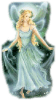

For
Piluca, who I used to remember and take
her in my heart
For
Piluca, who I used to remember and take
her in my heart
 The
swallow continued flying around the rush, her great love of the whole summer.
The winter is coming and I must go to Egypt, repeated the swallow to
the rush one and another time. All my brothers and sisters have already left.
Come with me, please, I love you so much said the swallow
to the rush, you should already decide. But the rush, proud of himself swayed
with the wind and didn't say anything. The swallow, tired of insisting and
seeing that their dear rush didn't want to accompany her, undertook the
flight heading for Egypt.
The
swallow continued flying around the rush, her great love of the whole summer.
The winter is coming and I must go to Egypt, repeated the swallow to
the rush one and another time. All my brothers and sisters have already left.
Come with me, please, I love you so much said the swallow
to the rush, you should already decide. But the rush, proud of himself swayed
with the wind and didn't say anything. The swallow, tired of insisting and
seeing that their dear rush didn't want to accompany her, undertook the
flight heading for Egypt.

 It
began to get dark when the swallow flew over a city and decided to
spend the night there. The swallow sighted In the distance a
statue over a big pedestal. It's beginning to freeze, I will settle on that
pedestal and the statue will protect me from cold, the swallow said. Suddenly, a
drop of water felt on her wing. Now it's beginning to rain, she thought.
The swallow ascended until the shoulder of the statue and when she looks
at her, discovered that it was beautiful statue. She had the body covered
with robes of gold and precious stones and her eyes were two beautiful
sapphires. But her eyes were plenty of tears that the swallow believed
that was rain. The statue was crying.
It
began to get dark when the swallow flew over a city and decided to
spend the night there. The swallow sighted In the distance a
statue over a big pedestal. It's beginning to freeze, I will settle on that
pedestal and the statue will protect me from cold, the swallow said. Suddenly, a
drop of water felt on her wing. Now it's beginning to rain, she thought.
The swallow ascended until the shoulder of the statue and when she looks
at her, discovered that it was beautiful statue. She had the body covered
with robes of gold and precious stones and her eyes were two beautiful
sapphires. But her eyes were plenty of tears that the swallow believed
that was rain. The statue was crying.
 -Why
do you cry beautiful statue? From here you have a splendid view;
you can see the whole town.
-Why
do you cry beautiful statue? From here you have a splendid view;
you can see the whole town.
-That is what
makes me sad swallow. In another time, I was a princess and I lived happy in my
 palace,
surrounded deluxe and comforts. I believed that everybody lived the same
as me. However, since I am here I see the misery and the poverty that exists in
this town that I loved so much. I would like to help this poor people, but
I am not able to. Would you pleased to help me swallow?
palace,
surrounded deluxe and comforts. I believed that everybody lived the same
as me. However, since I am here I see the misery and the poverty that exists in
this town that I loved so much. I would like to help this poor people, but
I am not able to. Would you pleased to help me swallow?
-How can I help you? ask the swallow. I have to go to Egypt for the winter. my sisters left long time ago
-Take off the pieces of my body and distribute them among the poor people of the town. The swallow made what the princess requested her.
-One thing more, said the princess, catch my eyes and take them over that hospital of needy children that you see in the distance. They will be able to sell them and buy the medicines that doctors need to cure the children.
-But princess, if I remove your eyes you will not able to see anymore.
-Don't care;
what I see doesn't make me happy. The swallow removes her eyes and let them fall
in  the Children's hospital.
Then the swallow returned beside the princess's statue. She was no longer a
beautiful statue. She had given all that made her
beautiful.
the Children's hospital.
Then the swallow returned beside the princess's statue. She was no longer a
beautiful statue. She had given all that made her
beautiful.
-Good-bye princess, I must leave to Egypt, said the swallow, if I don't leave now I will die from cold.
-Good-bye pretty swallow and thank you, said the princess, fly next to your sisters. The swallow fly around the princess, but when she saw her so alone and sad the swallow decided to stay a little more with the princess.
The cold winter ended and the spring comes again. The town's people saw that the statue so beautiful had been ugly and decided to change her for another one. They fastened a fire and tossed there the statue. Next to her there was a dead swallow and they also tossed her to the fire. Everybody stayed looking at the statue and the swallow burned. But their surprise was big when they saw that the statue had a heart that united to the heart of the dead swallow came out. Both hearts melted in the fire and then, together ascended to heaven.